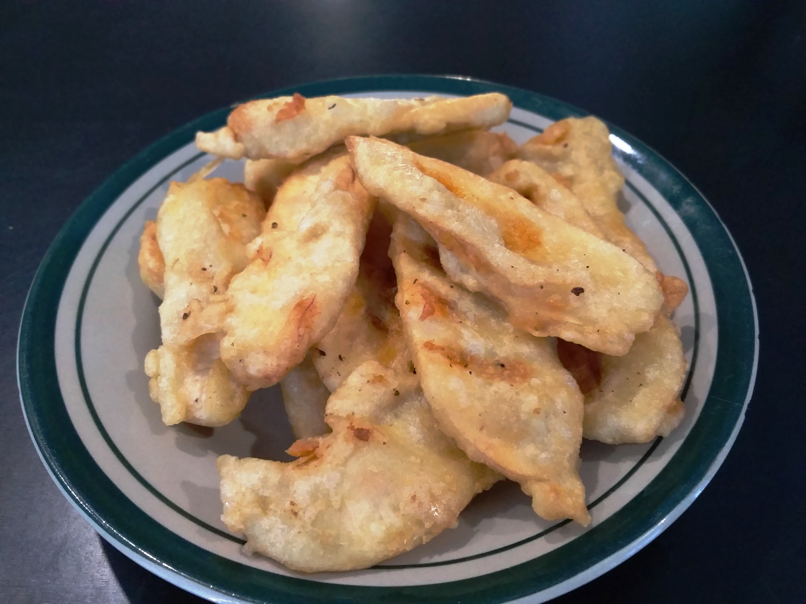

Banana Fritters

Description
Pisang Goreng, or Indonesian banana fritters, are ripe bananas coated in a light, crispy batter and deep-fried until golden brown. Sweet, crunchy, and comforting, they're a favorite snack sold by street vendors and enjoyed at home with coffee or tea.
Ingredients
- 6 ripe bananas (plantain or kepok variety), halved lengthwise
- 150 g all-purpose flour
- 2 tbsp rice flour
- 1 tbsp sugar
- 1/4 tsp salt
- 150 ml water
- Cooking oil for deep frying
Steps
- In a bowl, mix the all-purpose flour, rice flour, sugar, and salt.
- Gradually add water while whisking until you get a smooth, lump-free batter.
- Heat oil in a pan over medium heat.
- Dip each banana piece into the batter, coating it evenly.
- Fry the battered bananas until golden brown and crispy, turning occasionally.
- Remove and drain on paper towels.
- Serve warm, optionally with a drizzle of chocolate or condensed milk.
Home